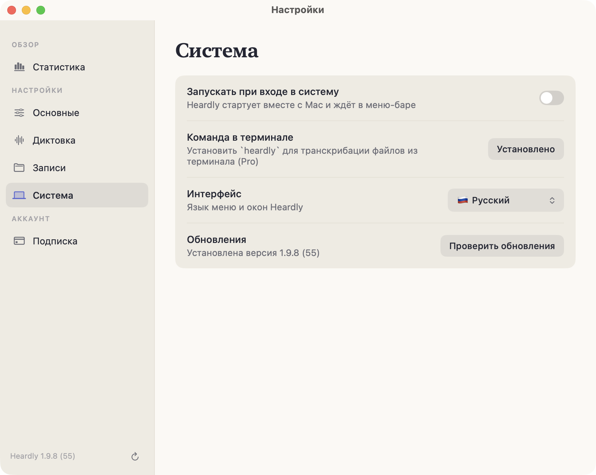
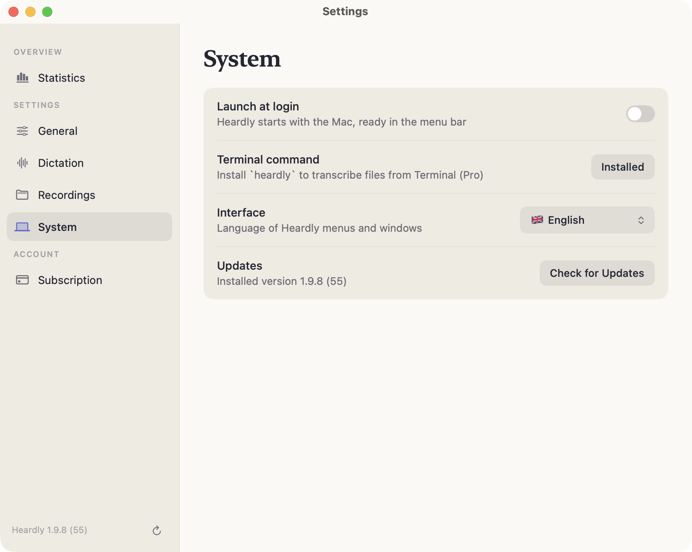

ОбновленияUpdates
Heardly проверяет новые версии сам и ставит их по вашему согласию. Проверить вручную и посмотреть установленную версию можно в настройках.Heardly checks for new versions by itself and installs them with your consent. You can check by hand, and see which version you have, in Settings.
Проверить вручнуюChecking by hand
Настройки → Система, строка «Обновления». Там же написана установленная версия и номер сборки. Та же кнопка есть внизу бокового меню настроек.
Settings → System, the “Updates” row. It also states the installed version and build number. The same button sits at the bottom of the settings sidebar.


После обновленияAfter an update
Две вещи, которые могут повести себя неожиданно:
- Разрешения. macOS привязывает их к сборке, поэтому «Универсальный доступ» иногда приходится включить заново — см. Текст не вставляется.
- Подготовка модели. После крупного обновления macOS модель один раз пересобирается под Neural Engine: первый запуск займёт до пары минут.
Записи, настройки и словарь замен обновление не трогает.
Two things that can behave unexpectedly:
- Permissions. macOS ties them to a build, so Accessibility sometimes has to be switched back on — see Text is not inserted.
- Model preparation. After a major macOS update the model is rebuilt for the Neural Engine once, so the first launch takes up to a couple of minutes.
Your recordings, settings and replacement list are left alone by an update.
Если Heardly открыт прямо из скачанного образа .dmg, обновиться он не сможет. Перенесите приложение в «Программы».If Heardly is running straight from the downloaded .dmg, it cannot update itself. Move the app into Applications.